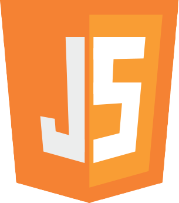
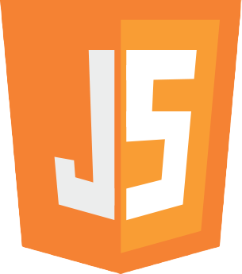

About Me
Hi! I'm a doctor currently working in the NHS, but aiming to transition into the technology and software development sector.
I've always had an intrest in software and tech throughout my adult life but have never had the courage to make the change from an already established career, until now!
I'm decicating most of my time to learning the skills required to make this enormous career swap.
Want to hear more?
I am an NHS doctor with three years of front-line experience in a wide range of medical and surgical fields spanning both primary and secondary care. I was accepted into General Practice speciality training in 2022 but have defferred this start date to explore alternative career pathways, primarily within software engineering and full-stack development.
Whilst at school my interests were spread broadly between both scientific and artistic subjects, however due to my qualfication-hungry mindset at the time I pursued medicine. I completed my MBBS alongside an intercalated Bachelor of Science in Medical Education, and was successfully posted in my first choice placements for both foundation and speciality training. I have learnt a lot from medicine but for a long time I have felt that my interests and talents would be better suited in a different field. I would love to work in an environment of which I have genuine interst; one where I can work to my true potential rather than the practical limits of an overburdened system.
I am currently completing the full-stack development pathway through CodeAcademy, followed by the IBM Full Stack Software Developer Professional Certificate through Coursera. You can view details of my roadmap in the Work section below. Here you can also view examples of my projects, with all of my code on my GitHub repo's linked below. I aim to be open to work and ready to begin building professional experience towards the end of 2023. Eventually I would like to utilise my experience in medicine as I feel this would give me a unique and valuable insight within, particularly, the HealthTech sector.
In my spare time I enjoy practical projects including DIY and stained glass and am in the process of renovating my home. I enjoy outdoor expeditions and completed a trek to Everest Base Camp in 2019, and in recent years have been on a roadtrip around America hiking through the numerous national parks. I am a hobbyist guitarist and over the years have collected a range of other instruments of which I can barely play.
I'm a practicing UK medical doctor but have come to realise that this profession is not for me.
I'm currently teaching myself to code through online platforms with the end goal to transition into Full Stack Development.
In the future, if I can utilise the knowledge that I have gained in the medical field within the tech sector, this would be ideal.
 
